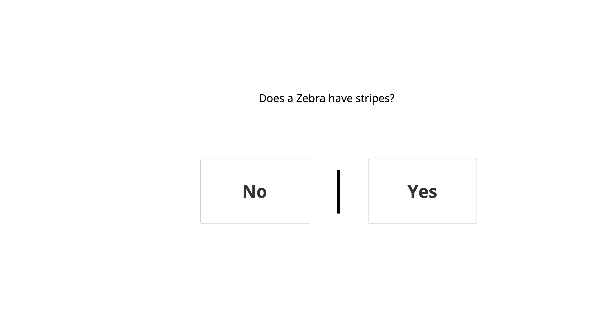
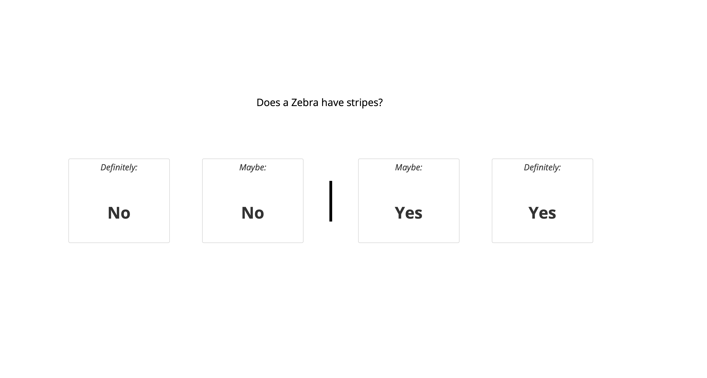

<!DOCTYPE html>
<html>
<head>
  <title>USYD Metacognition</title>
  <link rel="icon" type="image/x-icon" href="assets/logo.ico">

  <!-- Load jsPsych and jquery-->
  <script src="https://unpkg.com/jspsych@7.2.1"></script>
  <script src='https://cdnjs.cloudflare.com/ajax/libs/jquery/2.1.3/jquery.min.js'></script>
  <script src='https://cdnjs.cloudflare.com/ajax/libs/foundation/5.5.2/js/foundation.min.js'></script>
  <link href="https://unpkg.com/jspsych@7.2.3/css/jspsych.css" rel="stylesheet" type="text/css" />


  <!-- Load jsPsych plugins-->
  <script src="https://unpkg.com/@jspsych/plugin-instructions@1.0.0"></script>
  <script src="https://unpkg.com/@jspsych/plugin-html-keyboard-response@1.0.0"></script>
  <script src="https://unpkg.com/@jspsych/plugin-html-slider-response@1.0.0"></script>
  
  <script src="https://unpkg.com/@jspsych/plugin-survey-text@1.0.0"></script>
  <script src="https://unpkg.com/@jspsych/plugin-external-html@1.0.0"></script>
  <script src="https://unpkg.com/@jspsych/plugin-preload@1.0.0"></script>
  <script src="https://unpkg.com/@jspsych/plugin-call-function"></script>
  <script src="https://unpkg.com/@jspsych/plugin-fullscreen@1.0.0"></script>
  <script src="https://unpkg.com/@jspsych/plugin-survey-html-form@1.0.0"></script>
  <script src="https://unpkg.com/@jspsych-contrib/plugin-pipe"></script>

  <!-- Load the global environment-->
  <script src="global-env.js"></script>
  <script src="info_sheets.js"></script>
  <script src="plugin-html-button-response.js"></script>

  <!-- Load custom plugins from directory-->


</head>
<body></body>
<script>


//////////////////////////////////
//         Gloabl Settings      //
//////////////////////////////////

// Initalise jsPsych
  const jsPsych = initJsPsych({
    on_finish: function(data) {
      if(jsPsych.data.get().select('accuracy').mean() < 0.10){window.location = attention_redirect_link} else {window.location = redirect_link}
    }
})


// Settings
  const redirect_link ="https://app.prolific.co/submissions/complete?cc=CHGWKNI0"

 const attention_redirect_link ="https://app.prolific.co/submissions/complete?cc=C13PIUOF" // A seperate link for those who fail the attention check


// Capture any url paramaters
 const PROLIFIC_PID = jsPsych.data.getURLVariable('PROLIFIC_PID');
 const SONA_PID = jsPsych.data.getURLVariable('id');

 jsPsych.data.addProperties({participant_id: PROLIFIC_PID});

  // Save to OSF
 const subject_id = jsPsych.randomization.randomID(10);
 const filename = `${subject_id}.csv`;


 const save_data = {
  type: jsPsychPipe,
  action: "save",
  experiment_id: "GID2lWLGO4QE",
  filename: filename,
  data_string: ()=>jsPsych.data.get().csv()
};


//////////////////////////////////


 // Stimuli


const question_set = [
  { question: 'What is the name of the remains of plants and animals that are found in stone?', answer: 'Fossils',  decoy: 'Geoliths'},
  { question: 'What animal runs the fastest?', answer: 'Cheetah',  decoy: 'Gazelle'},
  { question: 'Which sport uses the terms "gutter" and "alley"?', answer: 'Bowling',  decoy: 'Bocce'},
  { question: 'What is the name of the ship that carried the pilgrims to America in 1620?', answer: 'Mayflower',  decoy: 'Santa Maria'},
  { question: 'What is the name for a cyclone that occurs over land?', answer: 'Tornado',  decoy: 'Landspouts'},
  { question: 'What is the name of the island-city believed since antiquity to have sunk into the ocean?', answer: 'Atlantis',  decoy: 'Lemuria'},
  { question: 'What is the last name of the baseball player who had the most home runs in a single season prior to 1961?', answer: 'Ruth',  decoy: 'Mantle'},
  { question: 'What is the name of the navigation instrument used at sea to plot position relative to the magnetic North Pole?', answer: 'Compass',  decoy: 'Gyroscope'},
  { question: 'Who was the Egyptian queen who joined forces with Mark Antony of Rome?', answer: 'Cleopatra',  decoy: 'Nefertiti'},
  { question: 'What is the name of the ocean that is located between Africa and Australia?', answer: 'Indian',  decoy: 'Pacific'},
  { question: 'What is the only liquid metal at room temperature?', answer: 'Mercury',  decoy: 'Aluminum'},
  { question: 'What is the last name of the second U.S. president?', answer: 'Adams',  decoy: 'Madison'},
  { question: 'What was the name of King Arthur&#39;s sword?', answer: 'Excalibur',  decoy: 'Arondight'},
  { question: 'What is the name of the three-leaf clover that is the emblem of Ireland?', answer: 'Shamrock',  decoy: 'Gaelic'},
  { question: 'What is the unit of electrical power that refers to a current of one ampere at one volt?', answer: 'Watt',  decoy: 'Ohm'},
  { question: 'What is the only word that the raven says in Edgar Allen Poe&#39;s poem "the raven"?', answer: 'Nevermore',  decoy: 'Forevermore'},
  { question: 'For which country is the rupee the monetary unit?', answer: 'India',  decoy: 'Maldives'},
  { question: 'What is the last name of the man who wrote "Canterbury Tales"?', answer: 'Chaucer',  decoy: 'Dickens'},
  { question: 'What was Frank Lloyd Wright&#39;s profession?', answer: 'Architect',  decoy: 'Musician'},
  { question: 'What kind of poison did Socrates take as his execution?', answer: 'Hemlock',  decoy: 'Cyanide'},
  { question: 'To show you are paying attention, please select Australia below?', answer: 'Australia',  decoy: 'England'},
  ]


  // Trials

var trialnum = 1;
var rating_type = jsPsych.randomization.repeat(["CR", "NoCR"], 10);
var bank = 10;

option_left = [];
option_right = [];

const hello_trial_C1 = {
  timeline: [

  {
    type: jsPsychHtmlButtonResponse,
    stimulus: function(data){
      return '<p style = "font-size: 19pt;">' + jsPsych.timelineVariable('question') + '</p>'
    },
    on_finish: function(data){


      data.rating = rating_type[trialnum -1];
      data.question = jsPsych.timelineVariable('question');
      data.correct_answer = jsPsych.timelineVariable('answer');

      if(data.response == 0 & data.rating == "NoCR"){data.selected = option_left}
        if(data.response == 1 & data.rating == "NoCR"){data.selected = option_right}

          if(data.response == 0 & data.rating == "CR"){data.selected = option_left; data.conf = "High"}
        if(data.response == 3 & data.rating == "CR"){data.selected = option_right; data.conf = "High"}
        if(data.response == 1 & data.rating == "CR"){data.selected = option_left; data.conf = "Low"}
        if(data.response == 2 & data.rating == "CR"){data.selected = option_right; data.conf = "Low"}

        if(data.selected == data.correct_answer){data.accuracy = 1} else {data.accuracy = 0}
          data.decoy = jsPsych.timelineVariable('decoy');


        if(data.correct_answer != "Australia"){
          data.trialnum = trialnum;
        }
      },
      margin_vertical: '100px',
      margin_horizontal: '40px',
      button_html: function(data){
        if(rating_type[trialnum - 1] == "NoCR") return [
          '<button style = "font-size: 30pt; min-width: 250px;" class="jspsych-btn">%choice%</button>', 
          '<button style = "font-size: 30pt; min-width: 250px;" class="jspsych-btn">%choice%</button>']
          if(rating_type[trialnum - 1] == "CR") return [
            '<button style = "font-size: 16pt; min-width: 250px;" class="jspsych-btn">%choice%</button>', 
            '<button style = "font-size: 16pt; min-width: 250px;" class="jspsych-btn">%choice%</button>', 
            '<button style = "font-size: 16pt; min-width: 250px;" style = "background-color: #33E0FF;" class="jspsych-btn">%choice%</button>', 
            '<button style = "font-size: 16pt; min-width: 250px;" class="jspsych-btn">%choice%</button>']
        },
      choices: function(data){
        shuffledArrayOriginal = jsPsych.randomization.repeat([jsPsych.timelineVariable('answer'), jsPsych.timelineVariable('decoy')], 1);
        option_left = shuffledArrayOriginal[0];
        option_right = shuffledArrayOriginal[1];


        if(rating_type[trialnum -1] == "NoCR"){

          shuffledArray = ["<p style = 'font-size: 30pt;'><strong>" + shuffledArrayOriginal[0] + "</strong></p>","<p style = 'font-size: 30pt;'><strong>" + shuffledArrayOriginal[1] + "</strong></p>"];

          return shuffledArray

        } else {

          shuffledArray = ["<i>Definitely:</i><br><br><p style = 'font-size: 30pt;'><strong>" + shuffledArrayOriginal[0] + "</strong></p>","<i>Maybe:</i><br><br><p style = 'font-size: 30pt;'><strong>" + shuffledArrayOriginal[0] + "</strong></p>","<i>Maybe:</i><br><br><p style = 'font-size: 30pt;'><strong>" + shuffledArrayOriginal[1] + "</strong></p>","<i>Definitely:</i><br><br><p style = 'font-size: 30pt;'><strong>" + shuffledArrayOriginal[1] + "</strong></p>"]
          return shuffledArray
        }


      }
    },


    {type: jsPsychHtmlSliderResponse,
    stimulus: function(data){
      return (`<div style="width:500px;">
        Current points: `+ bank +`<p>How many points would you like to wager on the response you just made?</p?</div>
        </div>`)
    },
    require_movement: true,
    max: 5,
    slider_start: 0,
    labels: ["0", "1", '2', '3', "4", '5'],
    on_finish: function(data){

            data.rating = rating_type[trialnum -1];
      data.question = jsPsych.timelineVariable('question');
      data.correct_answer = jsPsych.timelineVariable('answer');
      data.accuracy = jsPsych.data.get().last(2).values()[0].accuracy;
      data.conf = jsPsych.data.get().last(2).values()[0].conf ;

      if(data.correct_answer != "Australia"){
        data.trialnum = trialnum;

      }
      if(jsPsych.data.get().last(2).values()[0].accuracy == 1){bank = bank + parseInt(data.response)}
        if(jsPsych.data.get().last(2).values()[0].accuracy == 0){bank = bank - parseInt(data.response)}


      }
  },

  {
    type: jsPsychHtmlKeyboardResponse,
    trial_duration: 1000,
    on_finish: function(data){


            data.rating = rating_type[trialnum -1];
      data.question = jsPsych.timelineVariable('question');
      data.correct_answer = jsPsych.timelineVariable('answer');

      if(data.correct_answer != "Australia"){
        data.trialnum = trialnum;
        trialnum = trialnum + 1;
      }

    },
    stimulus: function(){
      console.log(jsPsych.data.get().last(2).values())
      var last_trial_correct = jsPsych.data.get().last(2).values()[0].accuracy;
      if(last_trial_correct == 1){
        return "<p>Correct!</p>You gain " + jsPsych.data.get().last(1).values()[0].response + " points"
      } else {
        return "<p>Wrong.</p>You lose " + jsPsych.data.get().last(1).values()[0].response + " points"
      }
    }
  }


  ],
timeline_variables: question_set,
randomize_order: true
}


  // Blocks


var instructions = {
  type: jsPsychInstructions,
  pages: [
    '<h2>Instructions</h2>This experiment will test your knowledge about general kinds of information. You will be asked a question, and you will be given two possible answers in the space provided below the question. The questions vary greatly in difficulty such that you will probably be able to answer some easily, while others will be harder, and still others you may not know at all. If, after searching your memory, you are sure you don&#39;t know the answer, then take your best guess. <br>' + 
    '<p>For example, here you would select "Yes" because a Zebra does indeed have stripes</p>',
    'On some questions, you will have also nned to indicate how confident you are in your answer. To do this, you should select not only which answer you believe is correct but indicate your confidence by selecting either "Definitely" when you have high confidence in your response or "Maybe" when you have low confidence in your response. <br>' +
    '<p>On this trial you would need to select the tile that corresponds <strong>both with your answer and your confidence.</strong> For example, if you select either the two tiles on the left of the <strong>|</strong> then you would be indicating that you <strong>zebras do not have stripes</strong>. If you choose the far left tile, you are indicating that you are very confident that zebras don&#39;t have stripes whereas the option just to the left of the <strong>|</strong> would indicate that you think that zebras don&#39;t have stripes, but are not entirely sure.',
    'After each question, you will be asked to wager points that you answered correctly. You can wager uop to 5 points on each question. You will start with a bank of 10 points.',
    'You will now begin the test. Do not use the internet to search for answers, if you do not know the answer, simply make your best guess. There will be 20 questions.'
    ],
  button_label_next: "Continue",
  show_clickable_nav: true
}


var debug = {
  type: jsPsychSurveyText,
  questions: [
    {prompt: 'Did you experience any issues while completing this study?', rows: 5}
    ]
}

// Set Condition


//


jsPsych.run([ participant_info_paid, instructions, hello_trial_C1, debug, save_data]);


//welcome, demographics

  // Run the timeline
 // jsPsych.run([demographics, hello_trial, save_data]);


</script>
</html>
